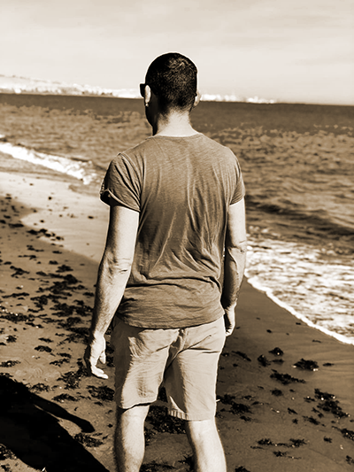
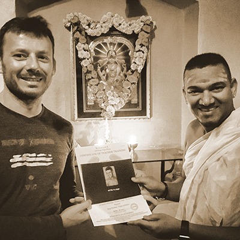
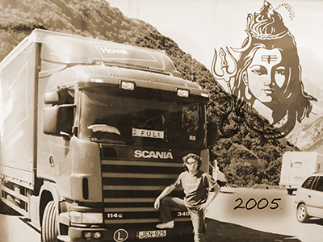
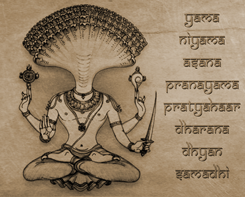
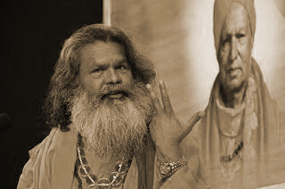
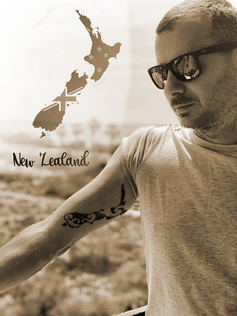
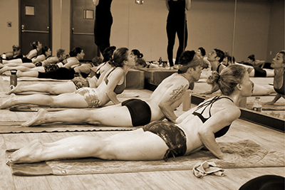
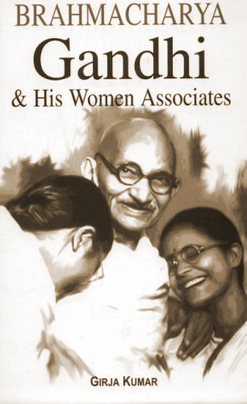
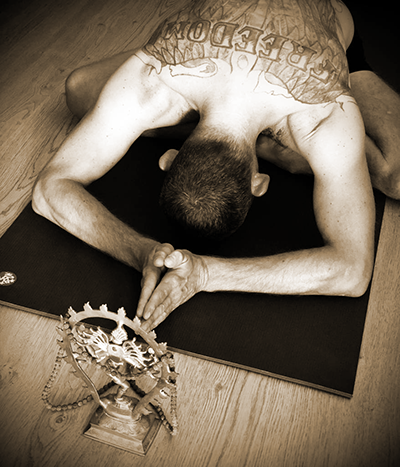
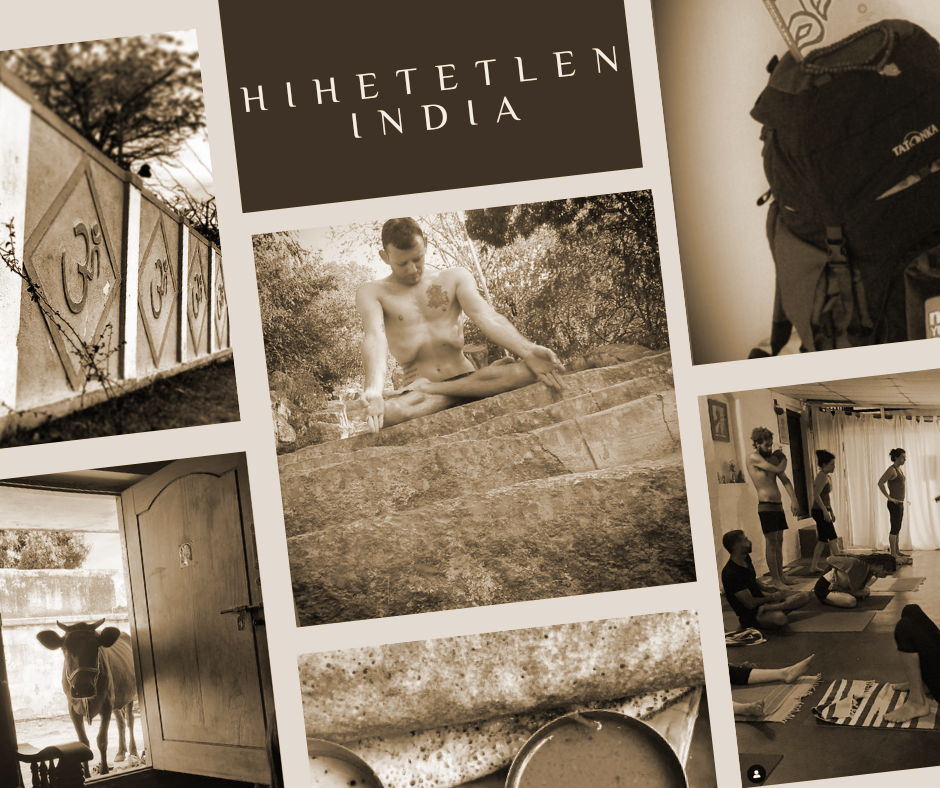

Online Jógaoktatás
„Semmiféle teljesítmény vagy eredmény nem lehetséges erőfeszítés nélkül” Sri T. Krishnamacharya

Blog
Első poszt
 Az utóbbi időben keveset voltam jelen az online világban. A covid kezdetekor tudatosan kezdtem bele egy social media detoxba. Tv már 2008-óta nincs jelen az életemben, így miután töröltem magam a Facebookról és az Instagramot sem használtam, vettem észre, hogy igazából mennyire hatással volt rám a sok kelletlen információ. Azt hittem, hogy tudom szűrni, hogy mi legyen hatással rám, mint nagy jógás, de nem. Annyira jó volt ez a detox időszak, hogy szívem szerint ellennék Insta és Facebook nélkül. Viszont ennyi pihenés után arra is rá kellett jönnöm, hogy 10 év tanítás után hiányzik, hogy megosszam a gondolataim, tapasztalataim. Itt van velem minden percben, amit az elmúlt 18 év jóga gyakorlás és életmód által tapasztaltam. Jelen van minden percben, minden cselekedetemben, minden döntésemben a hétköznapokban. Hiányzik az élmény, amikor láthatom, hogy az én tapasztalatom által lesz valaki boldogabb vagy csak jobban érzi magát a bőrében. Úgy döntöttem, posztok formájában kiírom magamból azokat a gondolatokat, amiket élőben az órákon osztanék meg. Legközelebb írok kicsit arról, hogy segít-e vagy nem a jóga az apaságban és a családfő szerep megélésében. update: KÖzben rájöttem, hogy több a mondanivalóm mintsem beleférne egyy egy posztba. Ezért megszületett ez a blog. Az első pár bejegyzést folyamatosan fogom majd bővíteni, ugyanis azok még poszt nagyságúakra lettek méretezve. Így viszont már van hely rendesen kibontani.
Második poszt
 Azt ígértem, hogy az apa szemszögéből írok majd, de azt hiszem érthetőbb lesz minden, ha az elejéről kezdem a sztorit. Mivel mindenki más indokból kezd el foglalkozni a jógával, más motiváció hajtja, hogy mit vár a jógától ez határozza meg az eltökéltségét is, hogy mennyi energiát rak bele. Kezdem az én motivációmmal, hogy engem mi hajtott, hogy éveken keresztül minden nap hajnalban keljek és gyakoroljak, keressem, kutassam a hiteles tanáromat, akit a szívembe fogadok, aki előtt megnyílok és akitől megtanulhatok mindent, amit csak lehet. Kevesen tudják miért kezdtem foglalkozni a jógával, csak a hozzám legközelebb álló emberekkel osztottam meg idáig. Az egóm miatt gyengeségnek tartottam, nem szerettem volna, ha ez befolyásolna bármit is. Ígérem eljutunk majd a mostani helyzethez is, hogy milyen az apaság jógás háttérrel, meg olyan feleséggel (Anyával), aki szintén jógázik. Lesz majd szó Új-Zélandról, Indiáról, Vácról, otthonszülésről, utazás 4 hónapos gyerekkel stb...
Azt ígértem, hogy az apa szemszögéből írok majd, de azt hiszem érthetőbb lesz minden, ha az elejéről kezdem a sztorit. Mivel mindenki más indokból kezd el foglalkozni a jógával, más motiváció hajtja, hogy mit vár a jógától ez határozza meg az eltökéltségét is, hogy mennyi energiát rak bele. Kezdem az én motivációmmal, hogy engem mi hajtott, hogy éveken keresztül minden nap hajnalban keljek és gyakoroljak, keressem, kutassam a hiteles tanáromat, akit a szívembe fogadok, aki előtt megnyílok és akitől megtanulhatok mindent, amit csak lehet. Kevesen tudják miért kezdtem foglalkozni a jógával, csak a hozzám legközelebb álló emberekkel osztottam meg idáig. Az egóm miatt gyengeségnek tartottam, nem szerettem volna, ha ez befolyásolna bármit is. Ígérem eljutunk majd a mostani helyzethez is, hogy milyen az apaság jógás háttérrel, meg olyan feleséggel (Anyával), aki szintén jógázik. Lesz majd szó Új-Zélandról, Indiáról, Vácról, otthonszülésről, utazás 4 hónapos gyerekkel stb...
Harmadik poszt
 Miért a jóga és miért ennyire elszántan? Hogy kerültem Indiába és lettem jógaoktató? Kezdem a legelején. Mostanra eltelt 18 év azóta, hogy elkezdtem a jógával ismerkedni, 13 év, hogy életmódommá vált. 10 év oktatás után az a tapasztalatom, hogy mindenkinek van valami motivációja, ami hatására elkezd a jógával ismerkedni. Valamit keres, valamit vár tőle. Nekem az életben maradás vagy csak egy elfogadható élet volt a motivációm. Később minden apró cseppje hatalmas pozitív minőségi változást adott. Mindig is golyóállónak gondoltam magam, aki örökké fog élni.😎 Aztán 2005-ben, 26 évesen egyszer csak furcsán éreztem magam, nem működtek az érzékeim rendesen. Gondoltam elmúlik másnapra, de csak egyre rosszabb lett. Kb. 1 hónapon keresztül keresték a dokik, hogy mi lehet, minden értékem rendben volt, de mégis rossz állapotban voltam. A végén elkerültem egy neurológia specialistához, ez a doki mondta azt, hogy fél évem van kb., hogy deréktól lefelé lebénuljak. Sclerosis multiplex volt a diagnózis. Az állapotom romlott, már egyedül segítség nélkül nem tudtam járni. Szétesett az egyensúlyérzékem, a látásom, és nem működött az idegrendszerem, az agyam által küldött parancsok nem jutottak el a testrészeimhez. Ekkor már eltelt jó pár hét a kezdet óta, hol jobban voltam kicsit, hol rosszabbul. A kórházban feküdve mérges voltam a világra, mindenre és mindenkire. Persze jött a kérdés, hogy miért pont velem?? (Később erre is megkaptam a választ, ahogy jobban értettem magam a jógán keresztül.) Aztán mikor már annyira mérges voltam a testemre, hogy cserben hagy, pedig azt hittem, hogy erős és számíthatok rá, elkezdtem gondolkodni, hogy ha az agyammal tudom irányítani a karom, lábam stb... akkor nehogy már ne tudjam befolyásolni az immunrendszerem is. Mélyen összpontosítva elképzeltem, hogy az immunrendszeremhez beszélek és ő hall engem. Szinte egész nap nagyon erősen koncentráltam és elképzeltem, hogy átveszem az irányítást az immunrendszerem felett és a helyes működésre bírom. Elkezdtem azon gondolkodni, hogy hogyan jutottam ebbe a helyzetbe, miért akar megölni az immunrendszerem, mi romlott el, ha idáig tudta a dolgát? (Most már tudom a jóga által teljesen tisztán, hogy mik voltak a kiváltó okok.) Nem ennek a hatására, de pár hét múlva elfogadható állapotban voltam, tudtam jönni menni egyedül. Első dolgom volt, hogy elmentem egy agykontroll tanfolyamra, abból az elképzelésből, hogy ha az agyam irányít mindent és ha képes vagyok irányítani, akkor vissza fordíthatom a dolgokat. Működött is, tényleg érezhető, kézzelfogható eredménnyel. Ez volt az első lépés, hogy olyan állapotba kerüljek, hogy tovább nézelődjek. Tudtam, hogy ez csak a kezdet. Minden pozitív élmény megerősített, hogy jó az elképzelésem, miszerint a fejemben van a megoldás. Ha ott én tudok az irányító lenni, akkor a testem követni fog. Azóta is ezzel a hozzáállással jógázom és élem a hétköznapjaim. Rengeteg mindent elolvastam, szinte mindent, ami az agy kordában tartásáról szólt és arra jutottam, hogy a jógával lehet a leghatékonyabban és a legmagasabb szintre fejleszteni az agy és a test irányítását. Itt kezdődött az új életem. Miért mondom el ezt? Mert amikor valaki azt mondja, hogy szüksége van a jóga gyógyító erejére, akkor tudom, mire képes az elszánt helyes gyakorlás.
Negyedik poszt
 Az első hullámnál (sub) ami károsodott az idegrendszeremben, az állandósult. Rossz egyensúlyérzék, romlottak a reflexeim, látászavar és időnként ha izgatott lettem, lezsibbadtam deréktól lefelé. Ehhez elég volt az is, ha gyorsan sétáltam. Az orvosok azt mondták, hogy kerüljem a kimerítő dolgokat fizikailag, mind idegileg mert úgy nagyobb esély van a következő hullámra. Amúgy meg gyógymód nincs. Nem törődtem bele, hogy innentől úgy kell élnem, mint egy 70 éves öregember. Sokat olvastam és a legpozitívabb amit találtam az annyi, hogy az étkezéssel és életmódváltással lehet javítani a helyzeten, de ami már elromlott, annak annyi. Tehát változnom kell. Beleástam magam a test működésébe, főleg az idegrendszer és az immunrendszer működésébe. Akkor egy kb átlagos 26 éves fiú voltam, bulizni jártam élveztem az életet. A sport és a tudatosság minimálisan volt jelen akkor még. Elhagytam mindent, ami kicsit is stimulálta az idegrendszerem, alkohol, kávé, fűszerek, cukor stb... Majd a kezembe akadt egy könyv A táplálékod legyen gyógyítód címmel, ami meggyőzött, hogy vegetáriánus legyek. Nagyon jól leírta a könyv, hogy mi történik a testben, ha zöldségeket, gyümölcsöket és azokat is milyen sorrendben esszük, meg mi történik, ha húst. Azóta is vallom több év kísérletezés után, hogy igaz amit írt az a könyv, hogy a könnyű emésztés az egészség alapja. Ez 2005 vége volt, azóta vagyok vegetáriánus. Az étkezésről fogok még írni, mert sokat kísérleteztem, foglalkoztam a táplálkozással és fontos része volt a fejlődésemnek.
Ötödik poszt
 Tehát megszületett az alap, persze kellett pár év kísérletezés a megfelelő beállításhoz. :-) Normális étrend, mozgás, meditálás (amit ma már csak relaxációnak hívnék), káros dolgok, szenvedélyek elhagyása. A változás drasztikusan érezhető volt. Nem csak fizikailag, hanem a személyiségemben is automatikus változás indult meg. Az orvosoknak "ülj le egyes". Minden alkalommal, amikor legyőztem fejben valamelyik berögződésemet egy régebbi káros szenvedélyemmel szemben, nőtt a magamba vetett hitem, hogy képes vagyok irányítani az életem, a sorsom. Ez a felismerés azóta is meghatározza az életem, hogy képes vagyok irányítani a cselekedeteimet, az egészségi állapotomat, a mentális állapotomat. Ez volt addigi életem legmegnyugtatóbb érzése! A jóga tanulmányozása megerősített, hogy az a megfelelő út, ha mesterien szeretném kézben tartani az életem irányítását minden szinten. Már csak a megfelelő Gurut és irányzatot kellett megtalálnom. 5 év keresgélés után találtam meg a nekem való irányzatot és a megfelelő tanárt, aki a mai napig inspirál, ha rágondolok. De az oda vezető szigorúan következetesen töltött évek adták meg az alapot, hogy felkészült legyek a találkozásra. Anélkül elmentünk volna egymás mellett. Már évek óta jógáztam, az utolsó pár hónapban heti 7-8-szor voltam jógaórákon, napi szinten olvastam jógás könyveket, jártam rengeteg jógastúdióban, kipróbáltam sok irányzatot. És akkor elérkeztem végre, hogy kinyíljon számomra a jóga kapuja. Az első Ashtanga Vinyasa órán találkoztam egy addig nem ismert energiával, de a nyitó mantránál ahogyan zengett az az "AUM" éreztem, hogy ez egy teljesen más hely, mint ahol eddig jártam. Ezt az élményt fokozta a tanárom Tiffany energiája, profizmusa. Ezen az órán már tudtam, hogy megtaláltam az életem értelmét. Attól a naptól kezdve, szinte minden gondolatom az Ashtanga jóga körül forgott. Ez került a legfontosabb helyre a napjaimban, hogy az órára megfelelő állapotban tudjak menni. Úgy ettem, ittam, aludtam, hogy a legoptimálisabb állapotban legyek minden nap. Mindent akartam amit az a közeg csak adhat. Soha nem voltam még ennyire fanatikus semmivel kapcsolatban. Végre a könyvekben írtak kezdtek értelmet nyerni.
Hatodik poszt
 Az előző poszt végén 2010-ben jártunk. Kis előtörténet, mert ott is történt pár érdekesség, ami meghatározó volt. 2008-ban költöztünk vissza New Zealandra. A 3 év tudatos életmód Magyarországon lehetővé tette, hogy egyre ritkábban érezzem, hogy beteg vagyok. Természetessé vált, hogy figyelem a testem jelzéseit és a meditálás. Aucklandban 2008-ban találkozhattam egy igazi Swamival, Sri Swami Maheshwarananda-val a yoga in daily life rendszer megalkotójával. Ez volt az első spirituális élményem, amit nem tudtam hova tenni akkor még. Pedig elfogultság nélkül, szkeptikus kíváncsisággal mentem a satsangra. Ennek hatására még lelkesebben tanulmányoztam a könyveket és egyre többet gyakoroltam ászanákat. A testem ekkoriban olyan merev volt, hogy előrehajolva nyújtott lábbal csak a sípcsontomig értem. A sarkamra nem tudtam ráülni, hídba felmenni esélyem sem volt. Az ászana gyakorlás inkább fájdalmas volt, mint kellemes. Inkább a filozófiát próbáltam alkalmazni a mindennapokban. Persze csekély sikerekkel, mert alig értettem valamit, hiába olvastam sokat. Viszont ahogy egyre többet gyakoroltam az ászanákat és figyeltem a testem közben, úgy kezdtem pici lépésben megérteni olyan részeket a könyvekből, ami előtte ködös volt. 2010-re már elég rendszeressé vált a gyakorlásom és már kacérkodtam a jama-nijama megvalósításával. Megfelelő tanár hiánya miatt el is vesztem párszor, miközben azt hittem mekkora király vagyok. Voltak jó élményeim, olyanok amiket nem is gondoltam volna, hogy képes vagyok rá és voltak rosszak, amiket már csak akkor ismertem fel, mikor már fájt. Évekbe telt egy csomó belső feszültség, önképzavar, elfojtás, blokkok kialakításán keresztül kikeveredni az erdőből, amit én ültettem. De végül azt hiszem és a Gurum is megerősít benne, hogy sikerült megértenem, mi a jóga 8 lépcsős útjának az első két lépcsője. Következő posztban részletezem mik voltak ezek az élményeim.
Hetedik poszt
 2010 eleje, New Zealand déli sziget egyik kisvárosában, egy 5 szobás házban élek brazil, német, kiwi lakótársakkal, ahol bérelek egy szobát. Hétköznap dolgozom a helyi zöldségfeldolgozó gyárban 12 órát naponta. Munka után edzek, futok, boxolni járok és közben próbálok időnként a könyveim alapján jógázni. Nagyon ritkán jelentkezik pár picike hullám (sub), de hamar el is múlik. A testem kezd erősebb és ellenállóbb lenni. A magány hatására előtörő vágyak kezelésére a jóga filozófiában keresem a megoldást. Próbálok a jelenben lenni és meglátni az élet szebbik oldalát mindennap, főleg amikor rám tör a magány. Több kevesebb sikerrel, persze ezt kifelé palástolva, jókedvet színlelve legtöbbször. Inkább csak próbálom elhitetni magammal, hogy milyen jó nekem. De mélyen belül őszintén tudom, hogy magányos vagyok és sokszor szomorú. Hogy elviselhetőbb legyen az egyedüllét, a szabadidőmben egyre több olyan programot próbálok találni, ami kihívással jár, nincs energiám közben sajnálni magam és növeli az önbecsülésem. Pl: elkezdek napi 20 km-t sétálni mindennap, majd elmegyek egy 2 napig tartó túrára, ahol megmászok egy több, mint 2000 m magas hegyet, néhol órákig négykézláb, miközben az erdőben alszok és a patakból iszok. A képekből videót is csináltam, ezen a linken megnézhetitek. Miért érdekes ez? Mert minden alkalommal amikor túlmentem a határaimon és a helyzetből adódóan nem adhattam fel, mert nem volt körülöttem semmi csak a tovább menni opció, az egy próba volt, hogy ne adjam fel, egyben maradjak fejben. Ezek voltak azok a pillanatok, ahol másképp nem ment, csak ha a gondolatokat elengedtem, megérkeztem a jelenbe és csak a légzésemre és a mozdulataimra figyeltem. Ilyenkor eltűnt a magány, a szomorúság az önsajnálat. Ez tanított meg arra, hogy sokkal többre vagyok képes, ha a gondolataim nem zavarnak és a jelenben vagyok. Ez már jóga volt, csak akkor még nem az ászana gyakorlás közben használtam, nem voltam elég tudatos, hogy bármikor alkalmazzam. Később a mindennapos reggeli gyakorlásnál tapasztaltam meg újra ezt az állapotot, a mozgó meditációt. Ezután már nem kellett hegyet másszak, repülőből ugorjak ki, fussak órákat, 250km/óra felett motorozzak, hogy újra a tiszta jelenben lehessek. Megtaláltam a megoldást a jógát.
Végre mindennap jógázom
 2010 június, most kezdődnek a valódi jógás tapasztalataim. leköltözök Dunedin-be munka miatt. Stadion építés napi 9 órában, 8-17-ig. Itt már több jógastúdió is van a városban. Az elsőbe, ahova bementem, az volt kiírva, hogy Bikram jóga. A könyveimből csak a hatha jógát ismertem még. Kipróbálás nélkül megvettem a havi korlátlan bérletet, majd elkezdtem a rendszert felépíteni. Minden napom ugyanúgy nézett ki. Szigorúbbá tettem az étrendemet, szinte pontosan megvolt mennyit és mit eszek, mennyit és mikor iszok. Elkezdtem a teljes nyers étkezést, csak a kenyér nem volt az. Reggelre mindig gyümölcs, napközben szendvics, amiket minden este elkészítettem, és szigorúan minimum 3 liter víz, estére gyümölcs. A munkaidőmben pedig hangoskönyveket hallgattam, mindent meghallgattam Poppertől Coelhóig, mindenkit. Bikramra heti 4-szer jártam. Itt kezdődött az első sokkélményem, hogy egy jóga óra mekkora kihívás is lehet. Nem csak fizikailag de mentálisan is. 38-40 fokos teremben ahol a szemközti fal teljes tükör, ezért szinte mindenkit látni, fülledt, párás a levegő, alig van ruha az embereken. A matracok között alig pár centiméter távolság, ezért időnként még össze is érünk. Ilyen környezetben lenni kb. 25 nő között úgy, hogy nem szexeltem már jóideje, külön kihívást jelentett. Eleinte muszáj voltam, később már meg is tanultam összpontosítani, és összeszedni magam bármennyiszer a 1,5 óra alatt, mentálisan és fizikailag is. Annyira megterhelőek voltak azok az órák fizikailag, hogy ha végig akartam csinálni, akkor muszáj voltam elengedni a gondolataim és csak arra koncentrálni amit csinálok, légzés, mozgás. Minden óra ugyanúgy zajlott. Az első 20 percben élveztem, majd onnantól csak azon küzdöttem a hátralévő időben, hogy ne ájuljak el. Ha nem bírtam magammal és nézelődtem, csak magammal toltam ki. Ezek az órák voltak, amiknek a hatására elkezdtem foglalkozni a Brahmacharya Jama-val, (érzékek kordában tartása), mert nem akartam minden órán a vágyaimmal küzdni. A leírások alapján azt gondoltam a megoldásnak (ami lehetett volna, csak nem egyedül tanító nélkül). Ezért megpróbáltam elnyomni a szexuális vágyaim. Persze eleinte semmilyen sikerrel, sőt csak jobban frusztrált. Később lett már eredménye, de az még messze van. Miután lejárt a bérletem, az új tapasztalataimmal magamról mentem át egy másik jógastúdióba. Bevallom egyáltalán nem élveztem ezt a hónapot, de valami mindig volt, ami miatt visszamentem. Viszont megtanultam nagyon sok mindent magamról ezidő alatt. Sok szempontból megalapozta a jógás életem, minden alkalommal olyan helyzetben voltam, ahol nem tudtam menekülni magam elől. Tehát muszáj voltam szembe nézni a gyengeségeimmel és az erősségeimmel is. Igazából már vártam azt a helyzetet, hogy élesben kipróbálhassam az olvasottakat. Sőt azzal is kezdtem azonosítani magam, hogy én vagyok az, aki a jóga tanításait alkalmazza az életében, természetesen jól. (Itt ültettem el a csíráját a később kialakuló személyiségzavaraimnak). Mostani fejjel, magamon megtanulva és sok jógázót látva az évek alatt hasonló gödörben, az a konklúzió, hogy a megfelelő tanító iránymutatásai nélkül, könnyen belekeveredhetünk a saját csapdánkba. Hogyan keveredtem el a jógafilozófia erdejében és mi lett a kiút? A következő posztokban erről írok majd.
Kilencedik poszt
 Még 4 meghatározó szakasza van a történetemnek, míg elérünk a jelenbe.
1. New Zealand, Dunedin, rátalálok az Ashtangára, kialakítom a jógás életvitelem kisérletezek a jama-nijama elveivel, hogy aszerint éljek.
2. India, Mysore, becsöppenek a nagyok közé zöldfülűként. Minden megváltozik amit odáig gondoltam magamról és a jógáról.
3. Haza térés Magyarországra, gyakorlóból, tanító leszek. Évekig tartó harc magammal, majd megnyugvás.
4. Házasság és apává válok. Minden a helyére kerül.
Mennyi poszt lenne ezeket kibontanom, nem tudom. Ezért csinálok egy blog oldalt ahol bőven lesz helyem írni. Ugyanis ahogy haladok előre a történetemben, azt veszem észre, hogy egyre hosszabbak a posztok. A sorban következő posztnál amit terveztem pl, hogy tényleg érthető és tanulságos legyen, sok szálat kellene elmagyaráznom. Milyen élmények mit váltottak ki, milyen hatások értek, és miért döntöttem úgy ahogy. Sajnos így már nagyon hosszúak lennének, posztnak. De mivel elszeretném mesélni, csinálok egy blogot ahol kifejtem ezt a 4 szakaszt. Őszintén leírom mit, hogyan éltem meg gyakorlóként és tanítóként is. Majd arról is írok a végén, hogy hogyan hasznosítom ezeket a tapasztalatokat apaként. Dolgozom a blogon, hamarosan megosztom a linket ahol szintén fent lesznek a posztok míg a végére nem érünk a sztorinak.
Még 4 meghatározó szakasza van a történetemnek, míg elérünk a jelenbe.
1. New Zealand, Dunedin, rátalálok az Ashtangára, kialakítom a jógás életvitelem kisérletezek a jama-nijama elveivel, hogy aszerint éljek.
2. India, Mysore, becsöppenek a nagyok közé zöldfülűként. Minden megváltozik amit odáig gondoltam magamról és a jógáról.
3. Haza térés Magyarországra, gyakorlóból, tanító leszek. Évekig tartó harc magammal, majd megnyugvás.
4. Házasság és apává válok. Minden a helyére kerül.
Mennyi poszt lenne ezeket kibontanom, nem tudom. Ezért csinálok egy blog oldalt ahol bőven lesz helyem írni. Ugyanis ahogy haladok előre a történetemben, azt veszem észre, hogy egyre hosszabbak a posztok. A sorban következő posztnál amit terveztem pl, hogy tényleg érthető és tanulságos legyen, sok szálat kellene elmagyaráznom. Milyen élmények mit váltottak ki, milyen hatások értek, és miért döntöttem úgy ahogy. Sajnos így már nagyon hosszúak lennének, posztnak. De mivel elszeretném mesélni, csinálok egy blogot ahol kifejtem ezt a 4 szakaszt. Őszintén leírom mit, hogyan éltem meg gyakorlóként és tanítóként is. Majd arról is írok a végén, hogy hogyan hasznosítom ezeket a tapasztalatokat apaként. Dolgozom a blogon, hamarosan megosztom a linket ahol szintén fent lesznek a posztok míg a végére nem érünk a sztorinak.
Rendszer a mindennapokban és a jama - nijama
 Még mindig Dunedinben járunk. Az 1 hónap Bikram jóga után elkezdtem hatha jógázni minden nap. A rendszeresség nagyon jót tett, rutinná vált minden a napjaimban. Nem volt még ilyen rendezett az életem azelőtt soha. Minden nap szinte percre pontosan meg volt mit csinálok. Minden napom fénypontja a jógaóra volt 17:30-kor munka után egyből. Hétvégén ahol volt jóga, oda mentem. Ugyan akkor kelltem, szinte ugyan azt ettem, ugyan abban a környezetben voltam és ugyan abban az időben feküdtem. Elkezdtem a környezetem megváltoztatni. Próbáltam kerülni és kizárni mindent ami nem volt kompatibilis az iránnyal amit jónak gondoltam. Szinte egész nap figyeltem magam, a gondolataim, az érzéseim. Nagyon akartam „jógás” lenni. A napi rutintól sok energiám lett, kezdtem erősebb, kitartóbb lenni. Meg is érkezett az érzés, hogy különb vagyok az átlagtól. De nem csak úgy simán különb, ÉN jógás vagyok és azok közt is az, aki betartom amit tanultam. Elkezdtem mindent a jama-nijama elvei szerint nézni. Minden gondolatomban vagy reakciómban kerestem melyik elv illik éppen oda, és próbáltam megfelelni, ahogyan akkoriban értelmeztem azt. Pl: az (Ahimszát) az erőszakmentesség elvét. Próbáltam jó indulattal lenni, amikor dühített valaki vagy valami. De bekellett látnom, hogy küszködöm vele. A jógának köszönhetően tisztábban láttam az érzéseim mint azelőtt és kezdtem meglátni a feszültségem mibenlétét, a haragom kiváltó okát. Felismertem, hogy sokat kell még gyakorolnom, hogy olyan legyek mint Ghandi. Eleinte bántott, hogy nem tudok mindenki felé szeretettel lenni, hogy vannak olyan emberek akik unszimpatikusak és hiába próbálom gondolatban megváltoztatni ezt a tényt, nem tudom. Ez miatt azt gondoltam, hogy biztos rosszul csinálok valamit. Azt gondoltam, hogy idővel ha többet gyakorlok és jobban odafigyelek minden részletre, akkor majd tényleg képes leszek a tökéletes „Ahimszára”. Nem lettem! A Mysore idószaknál erről írok majd még. A minden napok része volt a (Szatja) az őszinteség, igazmondás. Ezzel igazából nem volt problémám kifelé, viszont azt vettem észre, hogy magamnak próbálok időnként kamuzni. Főleg a (Brahmacsarja) az érzékek kordában tartásával kapcsolatban. Ezzel gyűlt meg a legjobban a bajom. Próbáltam elhitetni magammal, hogy jó nekem egyedül és nem vágyom a női nemre. Pedig csak arról volt szó, hogy nem tartottam elég jónak az angolom ahhoz, hogy oda menjek egy lányhoz aki tetszik. Inkább elhitettem magammal, hogy le tudom győzni a vágyaim. Több hónapos küzdés után, amikor már azt hittem, hogy mindent kézben tartok, szinte percre pontosan kontrolálok mindent, egyedül ami kibillentett az a szex utáni vágy volt. Minden nap megjelent, és próbára tett. Én pedig rosszul éreztem magam amiatt, hogy nem tudom irányítani, pedig az igazi jógik tudják. Aztán egy szép napon eljött az áttörés. Az utcán sétáltam és megint azt vettem észre, hogy egy lányt nézek és gyártom a gondolatokat vele kapcsolatban. Ebben a pillanatban végre megnyilvánult a sok gyakorlás, és külső szemlélőként megláttam, hogy mennyire szánalmasan loholok a gondolataim után. Ez volt az első alkalom, hogy kívűlről tudtam nézni magam. Láttam és hallottam a gondolataim, és csak figyeltem, ahogy tehetetlenül irányítja a testem és az érzéseim az elmém. Ekkor át vettem az irányítást. Megszabtam magamnak, hogy fölösleges vágyakozásra nem fecsérlem ezentúl az energiámat. Vagy cselekszem, vagy nem fantáziálok. Ezután még megszokásból nézelődtem párszor az utcán, de legalább most már észre vettem és figyelmeztettem magam. Pár alkalom után már stabil lettem és gondolatban sem billentett ki a vágy. Ekkor éreztem meg először igazán, hogy milyen amikor uralom a gonolataim. Olyan volt mintha egy hatalmas terhet raktam volna le, ami mindig velem volt előtte. Azt hiszem akkor ott, sikerült megvalósítanom a Brahmacsarja kis részét és végre irányítanom a vágyaim. Ez a tapasztalat megalapozta a későbbi fejlődésem, mindig eszembe jutott amikor az érzéseim vagy a gondolataim befojásoltak. A mai napig alkalmazom a hétköznapokban és a gyakorlásomban is, együtt a többi jama-nijama elv-el. Következő posztban még maradunk Dunedinben, aztán utazunk Mysore-ba Indiába.
Isten és az alázat
 Amikor elkezdtem jógázni, akkor vettem észre, hogy nagyon merev vagyok előrehajlásban. Nyújtott lábbal épphogy a bokámat értem csak el. Azelőtt nem is foglalkoztam ezzel, de később is lassabban fejlődött ez, mint más. Miért volt ez és hogyan változott meg? A mindennapi gyakorlás és a leírt élmények ellenére a filozófiában volt egy szó, ami mindig kibillentett, ha felbukkant. Szinte arcon csapott mindig, mikor olvastam. Márpedig elég sűrűn volt jelen a jógás könyvekben. Ez az Isten szó volt. Ugyanis akkor még erősen ateistának gondoltam magam, mégpedig azért, hogy ne szabjon irányt nekem senki, még Isten sem. A szabadság jelentése számomra az volt, hogy senki nem mondja meg, hogy milyen legyek, majd én tudom. Azt gondoltam, hogy úgy is megszerezhetem minden jótékony hatását a jógának, ha megmaradok a makacs utcagyereknek. A könyveken kívül még a hatha jógaórákon találkoztam egy szituval, ami hasonló ellenállást hozott ki belőlem. Az OM-ozással az óra elején és a végén még elvoltam, habár furcsa volt kicsit. Viszont a meghajlás és megköszönés a hálával tartozás a gyakorlás végén Istennek, Patanjalinak stb... sosem hajoltam meg. Sőt még emlékszem is a gondolataimra, hogy magamban mondtam olyankor, hogy kapd be, én senkinek nem hajlok meg. Hetek múlva, az egyik alkalommal, azt gondoltam kipróbálom és én is megköszönöm az Istennek és persze magamnak a gyakorlást. Meghajoltam, hozzáérintettem a homlokom a talajhoz. A mai napig emlékszem arra a megkönnyebbülésre. Tényleg mintha valódi súlyt engedtem volna el. Ott akkor még nem láttam tisztán, hogy miért volt pontosan jó érzés, csak később több hasonló helyzet után jöttem rá, hogy az egóm mekkora teherként nehezedett rám és hátráltatott a fejlődésben. Főleg Mysore-ban voltak hasonló élményeim, majd ha odaérünk írok arról is. Ezek az élmények mind nagyon meghatározóak voltak a fejlődésem szempontjából. Különösen az az első meghajlás. Azt gondolnánk ez csak ennyi, hogy kapott egy pofont az egóm és kész, megyünk tovább, megérdemelte. De itt sokkal több történt és nem csak azért, mert velem történt. Mindenkinél ugyanez a metódus, most már tudom. Abban a pillanatban egy picit kinyíltam az alázat felé. Mivel jó érzés volt, kezdtem élvezni is, hogy tudok ebben a helyzetben alázatos lenni. Később már képes voltam őszintén meghajolni és köszönetet mondani. Igaz csak magamnak és az általam elképzelt erőnek, de érdekes módon ez segített egy csomó dologban, hogy fejlődjek. Volt még miben változni bőven, de az előrehajlásom legalább lassan elindult. Mostanra kezdtem azt érezni, hogy a hatha jógaórák már nem elégítenek ki. Szerettem az ászanákat, de nem volt elég intenzív az óra menete. Egy nap megjelent egy kiírás a stúdióban. Pénteken este 7-től ashtanga óra, zárójelben, hogy alap jógás tudás szükséges. Nem is hallottam odáig még erről az irányzatról. Pár hétig csak néztem a kiírást de nem gondoltam, hogy beletartozom a belépőszintet megütők csoportjába. Aztán erőt vettem magamon és az egyik pénteki hatha órát kihagyva mentem el az életemet megváltoztató első ashtanga vinyasa jóga órára. Minden perce olyan volt, mint amire vágytam. Egy teljesen más jógás világba kerültem. Nem tudtam, hogy ezt kerestem, de az első 20 perc után otthon éreztem magam. Akkoriban mégcsak péntek este voltak ezek az órák. Innentől kezdve a hatha óra számomra csak gyakorlás volt a péntek estére. Egész héten a péntek estét vártam, az lett a hét fénypontja. Elkezdtem hétköznap a hatha órák után még otthon is gyakorolni az első sorozatot. Csináltam videót is magamról, emlékszem az érzésre mennyire komolyan beleadtam mindent, hogy jó legyek a felvételen. Visszanézve évek múlva, sokat nevettem, hogy mit bénázok. A lényeg, hogy annyira motivált voltam, hogy miután elkészült a stadion és amúgy is el kellett volna költöznöm másik városba munkát találni, adta magát a válasz, hogy megyek Mysore-ba az ashtanga vinyasa jóga városába és addig jógázom ott, ameddig kitart a félrerakott pénzem. A következő posztban összegzem, hogy mit változtatott rajtam az elmúlt fél év rendszeres jógázás, és hogyan éltem meg az ahimszát, a szatját, a brahmacsarját és az Aparigraha elvét ez az időszak alatt. Majd végre elutazunk Indiába, Mysore-ba az ashtanga vinyasa városába, ahonnan útjára indult ez az irányzat.
Goog bye Új Zéland, Hello India
Az elmúlt félévben folyamatosan próbáltam megérteni a jama-nijama elveit. A mostani szakasz az aparigraha a nem ragaszkodás, és a santosha a megelégedettségről fog szólni. Közeledett a nap, hogy elhagyjam Dunedint. Nagyon jó alapot adott ez a fél év, hogy új irányt vegyen az életem. A jógastúdióban ahova mentem a Bikram után, én voltam az egyetlen aki ott volt miden nap az órákon. A hónapok alatt már szinte a része lettem a stúdiónak. Minenki ismert és én is ismertem mindenkit. Az utolsó óra végén, meglepetésemre a tanárom felhozta, hogy sajnálja, hogy többet nem jövök már órákra, de örül is, hogy innen az utam Indiába vezet, ahol még ő sem járt. Búcsúzásképp, sokszor és hosszan zengette az OM-ot az egész terem nekem. Nagyon megható pillanat volt. Nem vártam semmi különöset, csendben egyszerűen akartam megköszönni a tanáromnak az elmúlt időszakot, majd indulni, belevetni magam Indiába és ott jógázni tovább. Az óra után összepakoltam az amúgy sem túl sok cuccaim, és elindultam 600 km vissza, hogy ott eladjam mindenem amit nem akarok magammal vinni. Visszatérve Blenheimbe, már semmi nem volt ugyan olyan mint amikor elindultam innen, más emberként jöttem vissza dunedinből. Az ex-emhez költöztem erre a hétre, ő segített elintézni mindent. Ekkor már 3 éve éltem Új Zélandon, szóval volt már egy csomó kötödésem amit elkellett simítani. De főként a tárgyaim jelentettek gondot. Minimális terhet szerettem volna vinni magammal, ehhez pedig szelektálnom kellett. Ezen a ponton nyert értelmet az Aparigraha a nemragaszkodás. Ebben a helyzetben a nem ragaszkodás semmihez ami az enyém, volt a feladat. Tehát tudatosan próbáltam alkalmazni mindenemmel kapcsolatban. Volt egy vadi új menő bukósisakom, egy egész jó fényképezőgépem két nagy optikával, egy kocsim stb.... Olyan dolgok, amiket összegyűjtöttem az évek alatt, de nem lett volna praktikus magammal vinni, tehát megkellett válnom mindentől. Szerettem ezeket a tárgyaimat, de éreztem is ebben a helyzetben, hogy inkább teherként funkcionálnak. A legnagyobb teher a kocsim, volt mert nem hagyhattam csak úgy ott, hogy a nevemen van, meg az ára is kellett. Sikerült pont az utolsó nap mielőtt indult volna a repülöm, eladnom. Nem is gondoltam volna, hogy ez segít majd megérteni tényleg mit is jelent az aparigraha és a santosha. Miután átadtam a kocsikulcsot a vevőnek, utána döbbentem rá, hogy nem maradt semmilyen kulcsom. Mivel csak vendég voltam az ex-emnél, így lakáskulcsom nem is volt. Az utolsó kulcs ami bármit is nyitott, ami tetőt jelentett a fejem felett és némi biztonságot, ahova bekuckózhatok ha bármi van, az a kocsikulcsom volt. Valójában hontalan lettem, akinek csak egy hátizsákja és egy repülőjegye van Indiába, ahol egy teljesen ismeretlen világ vár. Tudtam, hogy kétféle módon élhetem meg ezt a helyzetet. Ragaszkodom a biztonságos, megszokott környezetemhez a tárgyaimhoz, vagy tudatosan elengedem ezt a megszokást és nyitottá válok az állandóan változó élettel szemben. A nyitottságot választottam és elengedtem mindent amihez ragaszkodtam előtte. Ezt a fajta szabadságot soha nem éreztem még azelőtt. Ez a helyzet, hogy semmi nem korlátoz, semihez nem kötődöm, arra indulok amerre akarok, hozta el a megértést, hogy mindenem amit birtoklok, az ugyan úgy birtokol engem is, a tárgyak mellett, főként a gondolataim. Ezt pedig a jógának köszönöm, hogy így éreztem akkor. A jóga tanított meg arra, hogy én vagyok a felelős a gondolataimért és a tetteimért, függetlenül mindentől. Így hát ez az érzés csak mégjobban feltüzelt, hogy jöhet bármi ismeretlen, a jóga mutatja majd az utat. Végre eljött az indulás. A repülésben azt szeretem a legjobban mikor elemekedik a talajról. Olyankor válik számomra valósággá, hogy most már biztos elindultam és nemsokára egy új helyre érkezem. Nagyon szerettem ÚJ Zélandot, a mai napig sokszor emlegetem. De mégis örömmel búcsúztam tőle, mert várt az új, ismeretlen India a jógájával, és a hihetetlen kúltúrával. A legtöbbet akartam megtapasztalni Indiából. A tervem az volt, hogy a legolcsóbb utazást és szállást választom mindenhol. A valós indiai érzést akartam megtapasztalni, ezért Mumbaiból vonattal mentem Mysoreba, azon belül is másodosztályon, ami 2011 januárjában 600 ft volt a 24 órás út. 800 ft lett volna a klímás első osztály. Magamon kívűl 1 fehérbőrű lányt láttam az egész vonaton. Együtt ettem, aludtam a helyi emberekkel egy teljes napon keresztül. Nagyrészük még nem is látott fehérembert. De mégsem éreztem magam teljesen kívülállónak. Hihetetlen India, mindenhol ezt olvastam indulás előtt. Mindenki ezt írta akik jártak már itt. Ezért kíváncsisággal hagytam, hogy hatással legyen rám minden, a szagok, a látvány, a tömeg. Minden pillanatban éreztem, hogy olyan helyen vagyok, ami mindentől más mint ahol eddig jártam. Egyre jobban vártam, hogy megérkezzek Mysoreba és az ottani jógával is találkozzak. A következő posztban kifejtem kicsit bővebben Mumbait és a vonat utat, majd megérkezünk Mysoreba a Sthalam8 jóga Shalába.
A hihetetlen India ami átformált
 Indiába érkezésemet kb 2 hónapnyi információ gyűjtés előzte meg. Előtte soha nem érdekelt még India, így volt mit bepótolnom. Kíváncsi voltam mire számíthatok, milyen a kultúra, milyen veszélyekkel kell számolnom. Az internet nem volt még tele annyi infóval akkoriban, mint manapság, pár utazónak a blogját találtam, meg vettem egy Lonley Planet könyvet, ami alapján indultam. Olyan helyen éltem már 3 éve, ahol szinte minden kiszámítható. Az utcák tiszták, az emberek kedvesek, a világon itt a legalacsonyabb a korrupció, a közbiztonság jó, nem kell tartani, hogy átvernek, vagy rosszat akarnak nekem. Én ilyennek éltem meg Új Zélandot. Nagyon szerettem ezt a biztonságérzetet, éppen ezért fejben tréningeznem kellett magamat az Indiai környezetre. Pl: Alkudozás, figyelni, hogy ne adjanak el mindent drágábban, hogy jól adnak-e vissza stb... De legfőképpen a betegségektől tartottam, amit mindenhol kihangsúlyoztak. Mivel évek óta dolgoztam azon, hogy tisztán tartsam a testem minden méregtől, így kizárt volt, hogy oltást vagy bármilyen gyógyszert használjak majd. Inkább a megelőzésre játszottam. Csak hogy érezhető legyen a környezeti különbség, hogy honnan, hova megyek. Új Zélandon kb minden patakból vagy folyóvízből az erdőben vagy bárhol lehet inni, annyira tiszta. Míg indiában még a palackos vizet is ellenőrizni kell, hogy a kupakja nem lazult-e meg, miközben szállították. Az étteremben jobban jársz, ha saját evőeszközt használsz, amit ásványvízzel te mostál el. A nem tisztított víztől külföldiként megbetegszünk, és még rengeteg dolog van amire figyelni kell, ha először megy valaki Indiába. Pláne ha védőoltás és gyógyszerek nélkül szeretné az ember túlélni. Ennyit a félelmekről, végre megérkeztem Mumbaiba, jöhet a kaland. A hosszú repülésben azt szeretem, hogy amikor leszáll a gép, egy teljesen más világ fogad, mint ahonnan indultam. India pedig mindentől különbözik, mint ahol azelőtt jártam. Amikor először kijövök a repülőtérről egy új országban, nagyon szeretem azt az érzést, ahogy megcsap a hely illata, látványa. Ez az első pillanat a legmeghatározóbb számomra. A tudat, hogy ott állok egy vadidegen helyen, minden és mindenki ismeretlen, ez az igazi szabadság, úgy érzem. Csakis rajtam áll, hogy mit fogok kihozni a helyzetből. Minden döntésem következménye csak is az én felelősségem. A terv pedig az volt a reptéren állva, hogy egy 24 órás vonatút után megérkezzek Mysore-ba, megtaláljam a jógashalát, amit kinéztem, találjak szállást, és jógázzak minél többet az elkövetkező 6 hónapban. Hajnalban 5 óra körül szállt le a gép, a vonat pedig este 9-kor indult. Szóval volt egy egész nappalom Mumbai-ban. Már ekkor meg is kezdődött az önismereti utazásom. A vonatállomáson leadtam a hátizsákom egy olyan megörzőbe, ami kinézetre inkább volt egy lomtár, mint értékmegörző. Nem fogadtam volna rá, hogy meglesz mire visszajövök, de a 30 fokban nehéz lett volna cipelni egész nap. Félve mindentől az ételektől, a tárgyakhoz éréstől, emberek érintésétől, ivóvíztől, hogy megbetegít, elindultam kicsit belelátni Mumbai városába. Ahogy kelt fel a nap, úgy lett egyre nyüzsgőbb a város, és minden percben annyi inger ért, hogy csak kapkodtam a fejem. A megszokott kiszámíthatóságot felváltotta a folyamatos újdonságra reagálás. Döntések sokaságát kellett meghoznom egyfolytában. Mit kezdjek a kezében kisgyereket tartó kolduló anyukával, a taxisokkal, akik a legjobb barátaimként viselkednek, hogyan vélekedjek a meztelenül sétáló szentről aki előtt sepregetik az utat és időnként járókelők térdelnek elé és lábon csókolják. Ez mind a folyamatos nyüzsgés, dudaszó és szmog közepette. Oldalakat tudnék írni csak erről az egy napról, de sajnos aki nem volt még Indiában, nem találná érdekesnek. Estére visszaértem az állomásra, a kézzel írt papírfecnivel kiváltottam a hátizsákom és vártam. Rengetegen voltak az állomáson, de meglepődésemre, egyszerű volt megtalálni vonatom és a helyem is. Habár szinte senki nem beszélt angolul, nagyon segítőkészek voltak. Szinte egyedül voltam fehérbőrű az állomáson a többezer ember között. A másodosztály hozta, amire számítottam. Igazi Indiát akartam, hát megkaptam. Egy itthoni normál egymással szembeni ülöhely, este kis átalakítással, az itt hat ember alvó helye. Klíma nincs, helyette a mennyezetre csavarozott nagyteljesítményű ventilátorok mennek egész nap a 32 fokban. Nincs egy szabad hely sem, semmi privát szféra, mégis az emberek annyira természetesen, türelmesen, odafigyelve a másikra töltik az időt együtt. Ennek a tömegnek a része lenni 24 órán át, nagyon érdekes élmény volt. Úgy, hogy ők nem kalandvágyból utaztak ezen az osztályon, nekik ez a jegy is drága volt. Eleinte kicsit zárkózottan üldögéltem, tartottam tőle, ha elmegyek wc-re, eltűnik valamim. Aztán órák múlva már invitáltak kártyázni, próbáltak beszélgetni velem, mesélték ki hova való, miért utazik éppen. Volt olyan fiatal fiú, aki azért utazott ennyit mert hónapok után, a Mumbai-ban megkeresett pénzt vitte haza a családnak. Sokkal nehezebb körülmények között éltek ezek az emberek mint én, és nem csak páran közülük, hanem szinte mindenki. De tiszták voltak, tisztelettudóak, barátságosak és tudtak mosolyogni és megmaradtak embernek. Csak a hátizsákom többet ért, mint ott egy egész család havi keresete. Ezek és még sok ilyen élmény ért később, ami elgondokodtatott, hogy mi is a valódi érték az életben. Két nap utazás után megérkeztem a várva várt városba Mysore-ba. Este 10-kor ért be a vonat. A Lonley Planet alapján felkészülve, taxival mentem szállást keresni, de mondtam neki, hogy mindenképp várjon meg, míg ellenörzöm a szobát, hogy nincsenek-e bogarak az ágyban, hogy tovább tudjak menni, ha kell. Az első kettőnél be is jött, amit írt a könyv. Egész pofás kis szobák voltak, de ahogy megmozdítottam a paplant, rohantak szét a fekete kis bogarak. Kb éjfélre a harmadik hely volt, ami megfelelt. Sajnos nincsenek már meg azok a képek, de mindjárt reggel ahogy kinéztem az erkélyen, a járdán éppen fejnek egy tehenet, majd a tehén bóklászik tovább. Első alkalommal ezt még furcsának tartottam. Később voltak ennél cifrább dolgok is a tehenekkel. Riksával, (3 kerekű motor) elmentem a jógashalába. Egyszerű udvaros ház felső szintjén megcsinált kis terem, kis közösségi térrel, földön párnákkal, alacsony asztalokkal. Pont vége volt a reggeli órának, mire odaértem. A teremajtó nyitva, még érezni lehetett a reggeli Mysore gyakorlás illatát. Ajay már nem volt ott, csak az asszisztensei, meg pár gyakorló maradt az óra után. Csendben és könnyed mosollyal fogadott mindenki. Emlékszem az érzésre, milyen izgatott voltam, hogy végre megérkeztem oda, ahová hónapok óta készültem. Kezdődhet a jógázás. Következő posztban már a jógás élményeimről fogok írni Mysoreból.